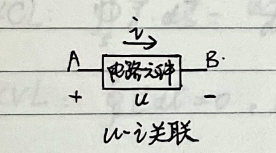
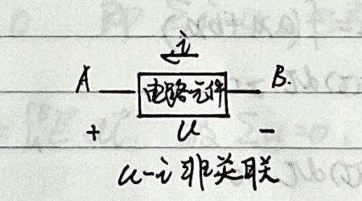

1. Scope of Circuit Studies
English translation of page 3 from "Circuits Principles, Experiments, and Semiconductors"
1.1 Circuit Studies Research Content
The field of circuit studies typically focuses on three primary areas of research:
Circuit Analysis
Given the structure and parameters of a circuit, find the circuit responses ($u$, $i$, $\dots$).
Circuit Synthesis
Given the circuit responses/behavior, determine the structure and parameters of the circuit (the solution may not be unique).
Circuit Design
From several alternative candidate schemes that satisfy performance requirements, select and determine the final circuit structure and parameters based on constraints such as cost, volume, and reliability.
1.2 Current and Voltage Definition
The fundamental variables in electric circuits are defined as follows:
- Current: $$i = \frac{dq}{dt}$$
- Voltage: $$u_{AB} = \frac{dw_{AB}}{dq} = \varphi_A - \varphi_B$$
1.3 Reference Directions and Power
Reference directions are critical for defining the algebraic sign of circuit variables. We analyze power using two configurations:

Associated Reference Direction
The reference direction of current $i$ enters the terminal designated with positive voltage polarity ($+$).

Non-associated Reference Direction
The reference direction of current $i$ leaves the terminal designated with positive voltage polarity ($+$).
Power Calculation Rules (Under the Associated Reference Direction):
- If calculated power is positive ($P_{\text{abs}} > 0$), the circuit element absorbs power.
- If calculated power is negative ($P_{\text{del}} < 0$), the circuit element delivers (generates) power.
1.4 Modeling of Circuit Elements
Circuit modeling involves establishing relationships between fundamental variables ($u$, $i$, $\psi$, $q$). For linear elements, these relationships simplify to the following classical formulations:
1.5 Fundamental Perspectives in Circuit Analysis
When analyzing circuit problems, three fundamental perspectives are employed:
-
Abstract Perspective: Mapping from a physical system to field representations, and finally to idealized circuit models:
Physical Model $\rightarrow$ Electromagnetic Field Model $\rightarrow$ Circuit Model
- Engineering Approximation Perspective: Approximating non-linear and complex physical components with simplified behavioral models (e.g., operational amplifiers, diodes, transformers).
- Equivalence Perspective: Determining equivalence for one-port networks. For instance, if two networks have terminal relationships $u = f_1(i)$ and $u = f_2(i)$ respectively, their electrical equivalence implies: $$f_1 = f_2$$